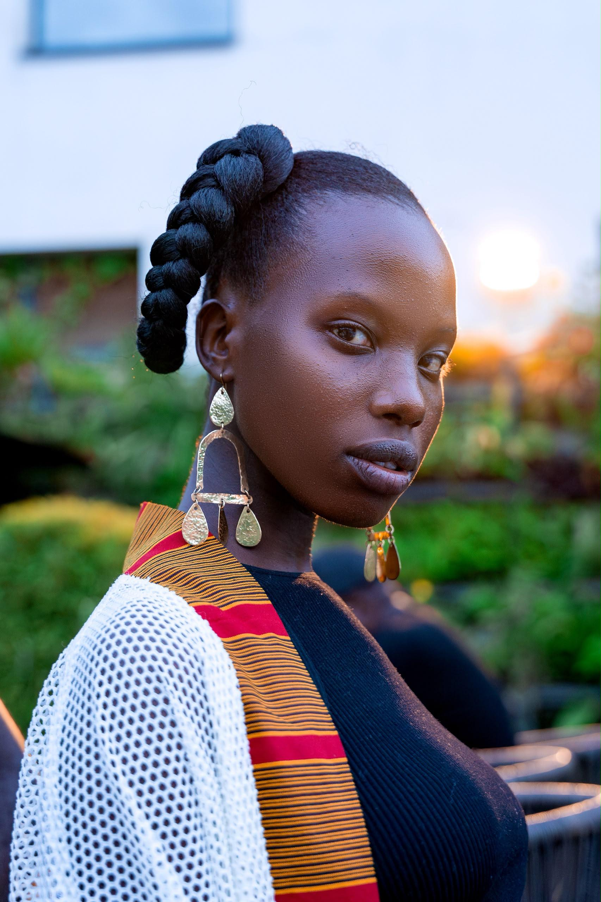
AFRICAN ROOTS · CREATIVE SPIRIT
Twikirize Patience.
Born in Kampala. Inspired by possibility. Exploring fashion through presence, creativity, and a style that feels like my own.
DISCOVER MY WORLD ↗A COLLECTION OF MOMENTS
Seen through my eyes.
Different moods. Different stories. One evolving journey.
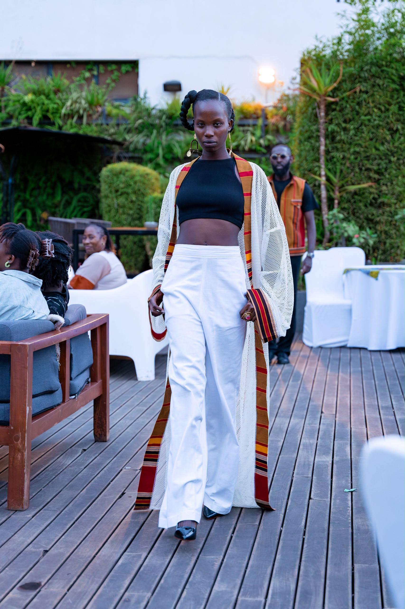
01 / A NEW PERSPECTIVE
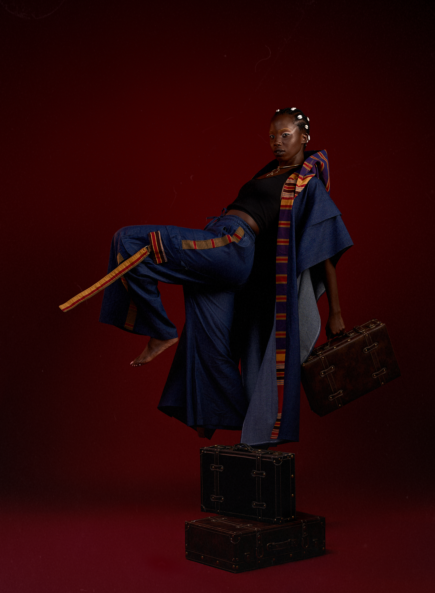
02 / THE EDITORIAL
03 / IN FRAME
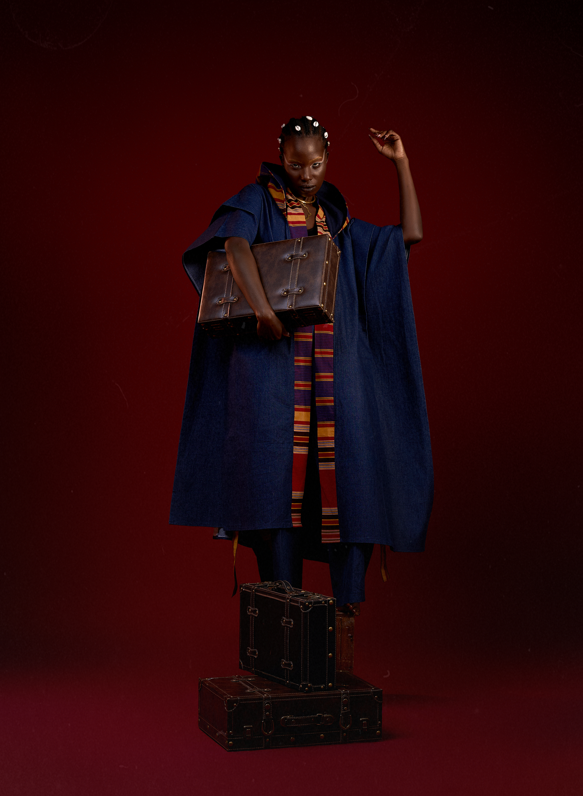
04 / FORM & EXPRESSION
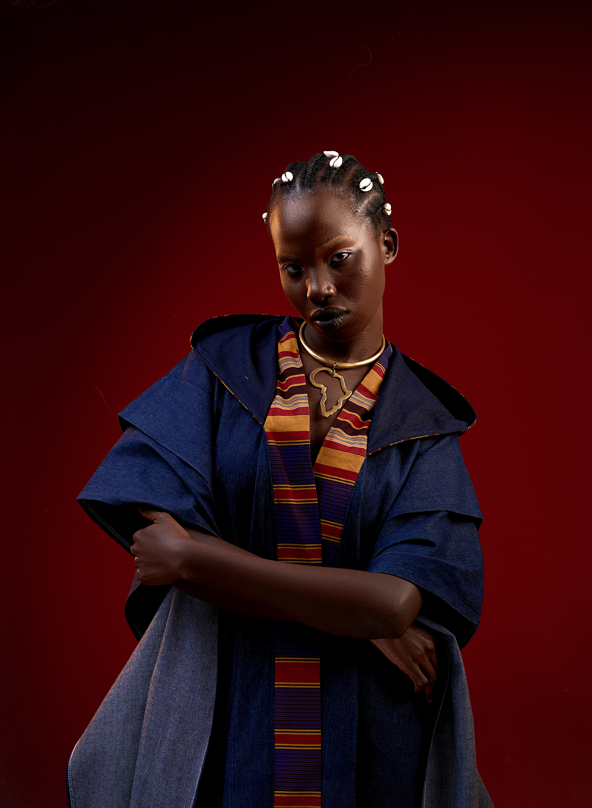
05 / THE ART OF PRESENCE
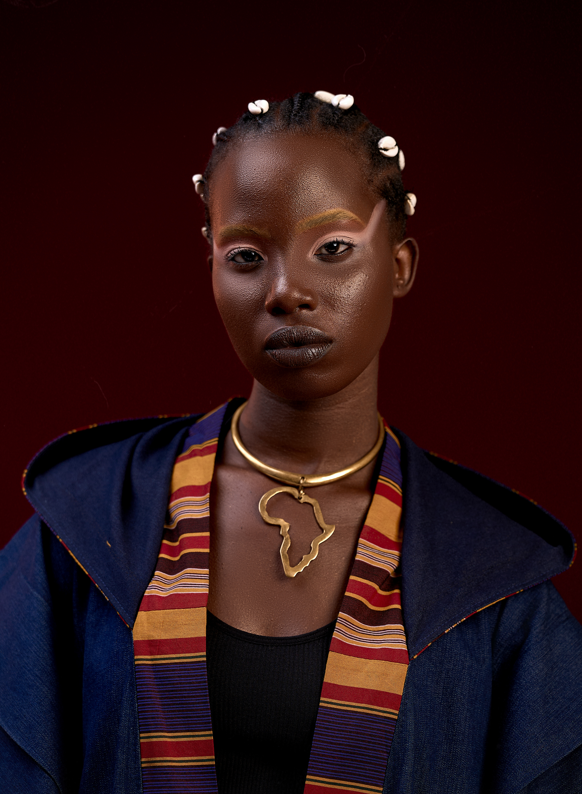
06 / STILL MOMENTS
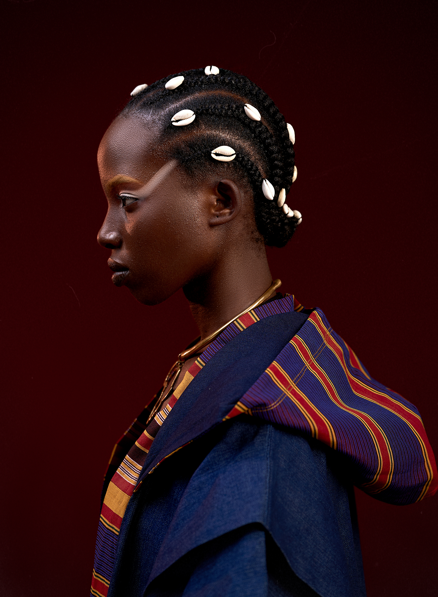
07 / A STUDY IN BEAUTY
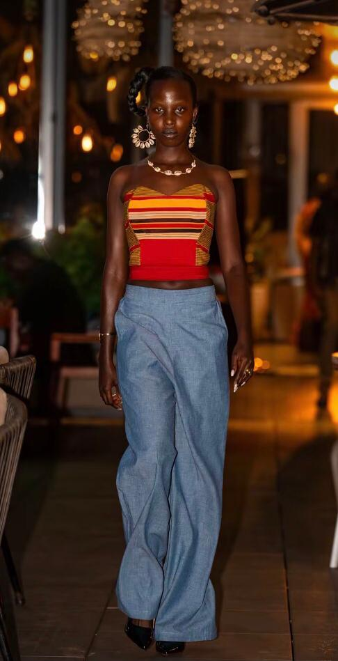
08 / NATURAL FORM
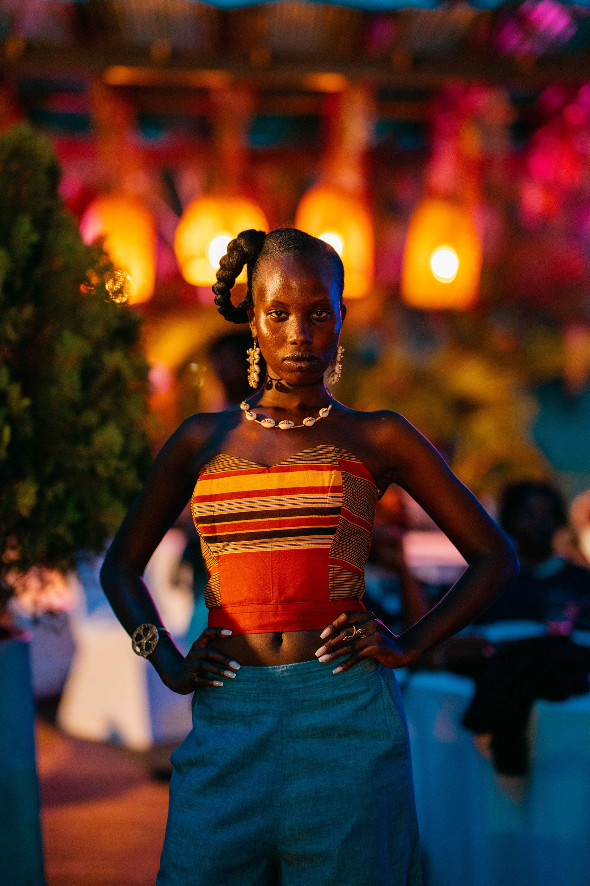
09 / BEYOND THE FRAME
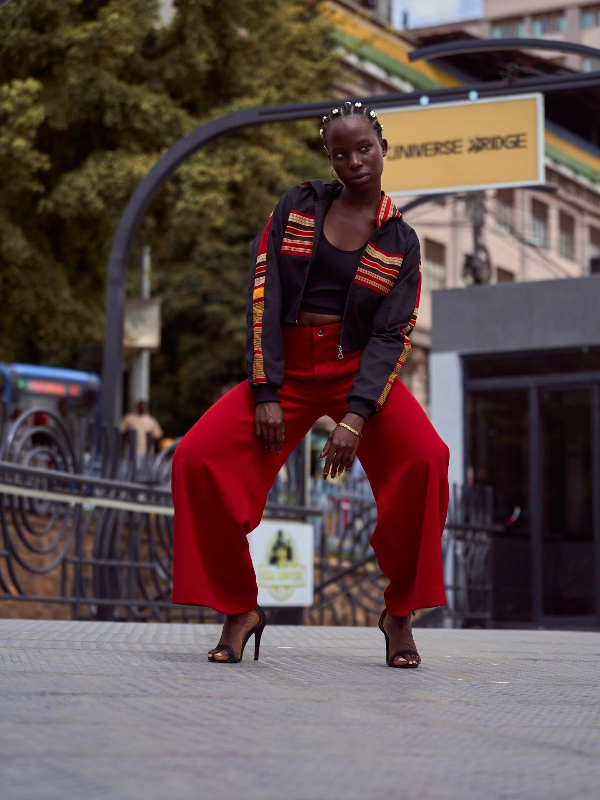
10 / QUIET CONFIDENCE
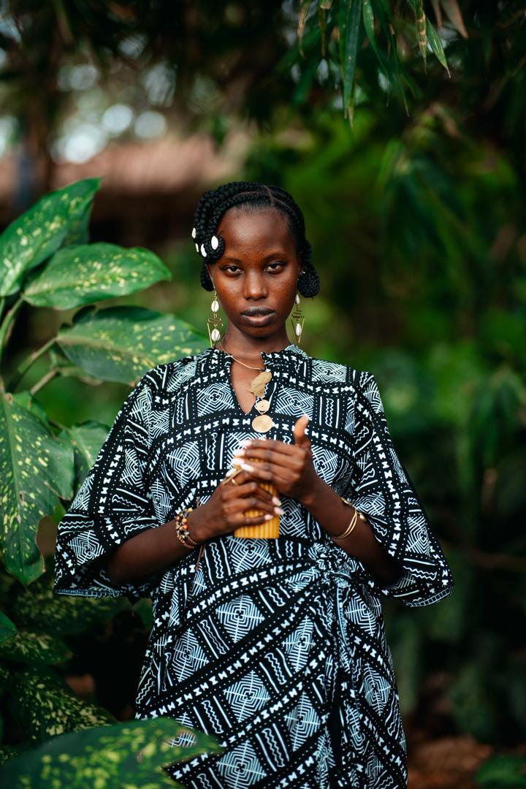
11 / AN ONGOING STORY
A LITTLE ABOUT ME
Rooted in Africa.
Inspired by possibility.
I'm Twikirize Patience, an African creative born and raised in Kampala, Uganda. I'm drawn to modeling, fashion design, and the possibilities that come from looking at clothing differently.
For me, fashion is more than what we put on. It's a way to explore identity, express ideas, and discover beauty in unexpected places. I'm interested in the creative process, from how a look comes together to how an existing garment might find a new life.
ROOTED IN KAMPALA · INSPIRED BY CREATIVITY
FASHION, WITH A DIFFERENT PERSPECTIVE
Not everything
needs to be new.
Sometimes, creativity begins with what we already have. I'm interested in how clothing can be reimagined, how familiar pieces can inspire new ideas, and how thoughtful design can give things another chance to be seen.
Rethink it. Rework it. Rewear it.OPEN TO CREATIVE POSSIBILITIES
Have something
in mind?
For modeling opportunities, fashion projects, creative collaborations, or simply to connect, I'd love to hear from you.
LET'S CONNECT ↗ Follow Patience on Instagram ↗